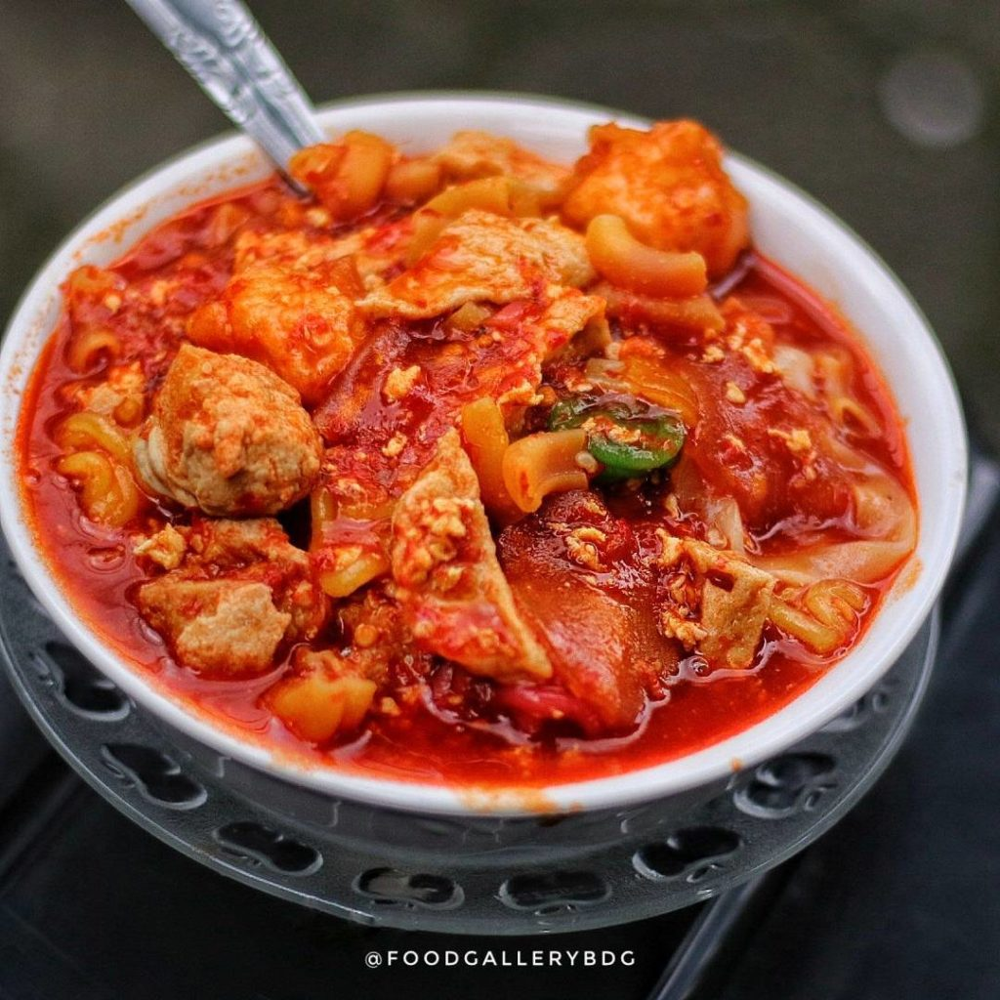

Resep Kuliner Bandung
Seblak Bandung Kumplit Lezat

Foto: @FOODGALERRYBDG
Bahan-Bahan:
- 1 buah paha ayam, direbus, disuwir
- 50 gram makaroni
- 150 gram kerupuk putih
- 4 buah sosis, dipotong-potong
- 2 lembar kol, diiris
- 5 buah bakso, diiris tipis
- 50 gram kwetiau
- 1 butir telur, dikocok lepas
- 2 batang caisim, dipotong 2 cm
- 1/4 sendok teh merica bubuk
- 1 batang daun bawang, diiris
- 2 sendok teh garam
- 50 gram taoge
- 1/4 sendok teh gula pasir
- 600 ml air
- 2 sendok makan minyak untuk menumis
Bumbu yang Dihaluskan:
- 2 cm kencur
- 2 siung bawang putih
- 3 butir bawang merah
- 4 buah cabai merah keriting
Langkah-Langkah Membuat